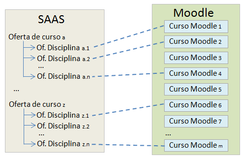
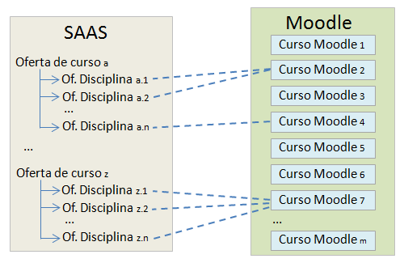
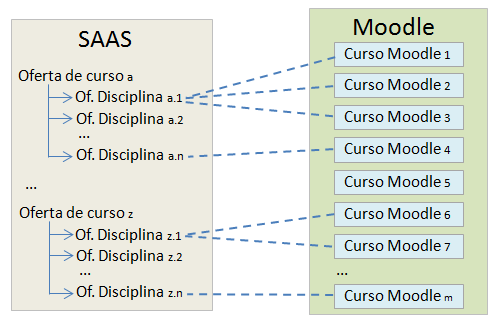
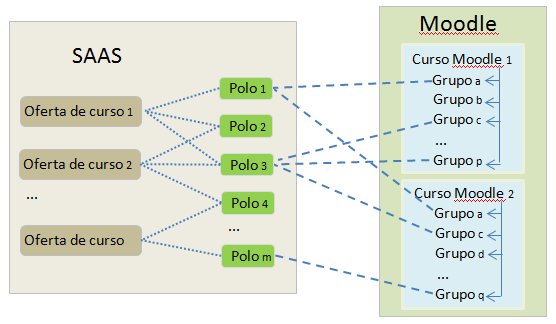
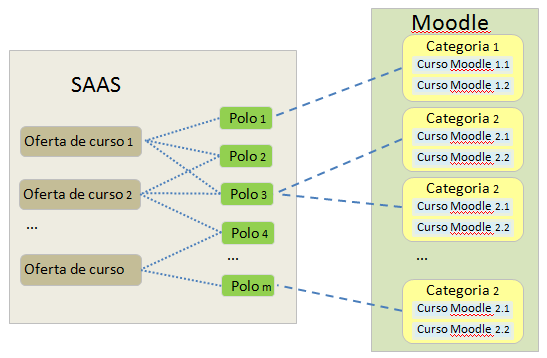
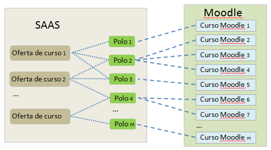

Este módulo possibilita a exportação de dados do Moodle para o SAAS (Sistema de Acompanhamento e Avaliação dos Cursos da Rede e-Tec Brasil). Os dados exportados incluem:
Como há diversas formas (pedagógicas e técnicas) de estruturar as ofertas de cursos, de disciplinas e polos no Moodle, é necessário definir um mapeamento entre as entidades do Moodle (categorias, cursos e polos) para as entidades do SAAS (ofertas de disciplinas, ofertas de cursos e polos) de forma a ser possível a exportação dos dados mencionados acima do Moodle para o SAAS. Para tal, são apresentados abaixo cenários de uso deste mapeamento.
Neste cenário, há uma relação de um para um entre cursos Moodle e ofertas de disciplinas, ou seja, cada curso Moodle corresponde a uma e somente uma oferta disciplina. Desta forma, quando forem exporados os dados do Moodle para o SAAS, os professores, tutores a distância e estudantes inscritos num curso Moodle serão automaticamente associados à correspondente oferta de disciplina do SAAS.
Neste cenário um curso Moodle comporta mais de uma ofertas de disciplinas, estando os conteúdos distribuídos em tópico, seções etc. Assim, quando forem exporados os dados do Moodle para o SAAS, os professores, tutores a distância e estudantes inscritos num curso Moodle serão automaticamente associados (replicados) a todas as ofertas de disciplina do SAAS às quais ele estiver relacionado.
Neste cenário pode haver mais de um curso Moodle associado a uma mesma oferta de disciplina, ou seja, pode haver diversas versões ou cópias da mesma disciplina no Moodle, como, por exemplo, uma para cada polo. Quando forem exportados os dados do Moodle para o SAAS, os professores, tutores a distância e estudantes que serão associados a uma oferta de disciplina do SAAS correspondem a uma união de conjuntos (para cada papel) entre as pessoas inscritas nos cursos Moodle que estiverem mapeados para esta oferta de disciplina.
Este cenário considera que tutores presenciais (de polo) e estudantes encontram-se agrupados no Moodle, ou seja, que haja grupos no contexto de um curso Moodle correspondentes aos polos registrados no SAAS (note que é possível mapear mais um grupo do Moodle para um mesmo polo do SAAS). O resultado é que quando forem exportados os dados, os tutores presenciais (de polo) e os estudantes pertencentes a um grupo serão automaticamente associados ao correspondente polo no SAAS. Por sua vez, no SAAS os polos são automaticamente associado às ofertas de curso em função do mapeamento entre cursos Moodle e ofertas de disciplina descrito nos cenários 1, 2 e 3 acima.

O mapeamento de grupos para polos é feito com base no nome do grupo, não importando o curso onde o grupo esteja inserido ou a oferta de curso ao qual o polo esteja vinculado. Este mapeamento é feito uma única vez, passando a ser reconhecido em todos os cursos Moodle que tenham sido mapeados conforme descrito acima. É importante, portanto, que não sejam utilizados nomes idênticos de grupos no Moodle que representem polos distintos.
Neste cenário em cada curso Moodle estão inscritos tutores presenciais (de polo) e estudantes de um único polo, sendo utilizadas categorias no Moodle para reunir cursos Moodle ofertados em um mesmo polo. Ou seja, em cada categoria há cursos Moodle correspondentes às ofertas de disciplinas de um polo em particular. Note que é possível mapear mais de uma categoria para um mesmo polo.
Quando forem exportados os dados do Moodle para o SAAS, o conjunto de tutores presenciais (de polo) e estudantes que serão associados a um polo corresponde à união de conjuntos (por papel) dentre os inscritos nos cursos Moodle pertentencentes a uma categoria, sendo considerados apenas os cursos Moodle que tenham sido mapeados (ver cenários 1, 2 e 3).
A exemplo do descrito no cenário A, no SAAS os polos são automaticamente associado às ofertas de curso em função do mapeamento entre cursos Moodle e ofertas de disciplina (ver cenários 1, 2 e 3).

Neste cenário em cada curso Moodle estão inscritos tutores presenciais (de polo) e estudantes de um único polo. Este cenário é muito similar ao cenário B, mas considera que os cursos Moodle não estejam agrupados em categorias. Assim, é necessário relizar mapeamento individual curso a curso Moodle para o polo correspondente. Quanto à exportação de dados, o comportamento é o mesmo daquele descrito no cenário B
